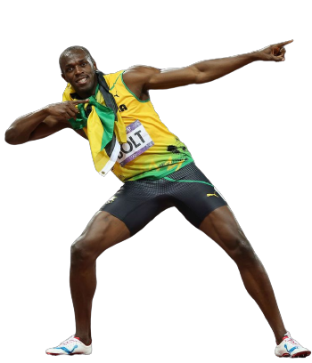
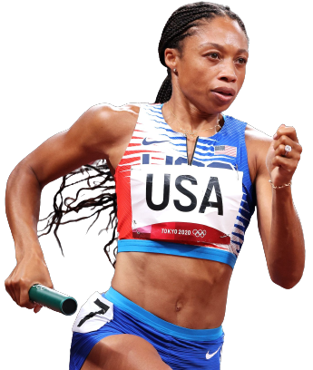

USAIN BOLT
- Nació el 21 de agosto de 1986 en Trelawny,Jamaica
- Debutó como atleta el 2004 y actualmente está retirado
- Posee 8 medallas de oro en los Juegos Olimpicos
- Ganó consecutivamente el Oro en los 100m, 200m y 4x100m durante 3 Juegos Olimpicos
- Tiene 3 records mundiales bajo su nombre, pero siendo autor de 5
- Primer, segundo y tercer mejor tiempo en los 100 metros
- Record mundial en los 200 metros con 19.19 segundos
- Record mundial con Jamaica en los 4x100 metros haciendo 36.84 segundos

ALLYSON MICHELLE FELIX
- Nació el 18 de noviembre de 1985 en Los Angeles, Estados Unidos
- Debutó como atleta el 2004 y actualmente está retirada
- Atleta más laureadea de todos los tiempos con 18 medallas
- 7 veces campeona olímpica y catorce veces campeona mundial
